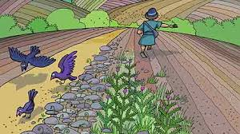
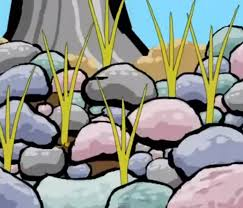

A la mañana siguiente el granjero salió a sembrar mientras sembraba, parte de la semilla cayó junto al camino; y vinieron las aves y se la comieron. Parte de la semilla cayó en pedregales, donde no había mucha tierra, la semilla brotó pronto, porque no tenía profundidad de tierra y salio el sol y se quemó, por que no tenia raiz, se seco. Parte de la semilla cayó entre espinos, los espinos crecieron, y la ahogaron. Y una pequeña parte de la semilla cayó en buena tierra, y dio bien fruto.
 